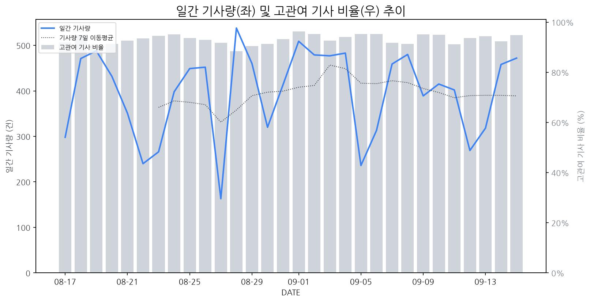

1
시장 활동 지표
기사량 추세 & 이상 징후 탐지
시장의 '전체 기사량'이 평소보다 비정상적으로 급증했는지(Spike)를 차트로 확인하고, LLM이 분석한 급등의 핵심 원인을 파악할 수 있음

고관여 기사란? 산업 연관 키워드로 수집된 기사들 중 디스플레이 키워드에 가중치를 반영하여 도출된 관련성 높은 기사
수집된 기사 수 (2026-09-15)
472
-2% WoW
기사량 변동 수준 (7일 이동평균 대비)
±6.7% 이하
2
오늘의 키워드
급격한 관심 ↑, 주목해야 할 키워드
1
qled
+3.1σ
피부처럼 늘어나는 신축성 QLED 기술 개발 성공 소식이 관련주 급등을 견인했습니다.
Related Metrics
금일 언급량: 9, 전일 대비: +6
Interpretation
차세대 디스플레이 경쟁 우위 확보
Next Step
핵심 토픽 'Quantum_Dot_Topic' 관련 신호입니다. 3번 섹션(키워드 감성분석)에서 해당 토픽의 감성 변동을 교차 확인하세요.
2
hp
+2.2σ
HP 대표 모친상 관련 부고 기사와 스타트업 프로그램 합류 소식이 복합적으로 작용한 것으로 분석됩니다.
Related Metrics
금일 언급량: 6, 전일 대비: +3
Interpretation
HP 신사업 기대감 상승.
Next Step
'hp' 관련 상세 기사 및 경쟁사 반응 모니터링
3
ar
+1.9σ
XR/AR 관련 신규 에미상 후보작 발표가 기대감을 높여 관련주 동반 상승.
Related Metrics
금일 언급량: 5, 전일 대비: +5
Interpretation
XR/AR 디스플레이 수요 증대
Next Step
'ar' 관련 상세 기사 및 경쟁사 반응 모니터링
4
인텔
+1.8σ
인텔 CEO의 AI 메모리 부족 심화 전망 발언이 반도체 공급망 불안 우려를 키웠습니다.
Related Metrics
금일 언급량: 4, 전일 대비: +4
Interpretation
반도체 수급 불안정 심화
Next Step
'인텔' 관련 상세 기사 및 경쟁사 반응 모니터링
3
실시간 Risk 키워드
경계해야 할 시그널 탐지
특정 토픽의 부정 감성 점수가 급등할 때 이를 즉시 탐지하고, "근거 기사" 링크를 통해 리스크의 실체를 빠르게 파악할 수 있음
키워드 분석 결과, 오늘은 걱정할 만한 하락 신호가 없습니다. (부정 언급량 변화: +1.5σ 이내)
4
주요 이벤트 모니터링
실시간 산업 동향 파악을 위한 주요 활동
최근 발생한 주요 기업들의 신제품 출시, 투자 등 주요 이벤트를 제공하여 매일 경쟁사 동향을 확인할 수 있음
애플의 신제품 출시 기대감이 고조되면서 삼성디스플레이와 LG디스플레이의 프리미엄 OLED 디스플레이 존재감이 부각되고 있습니다. 이는 두 회사가 프리미엄 OLED 시장에서 핵심적인 역할을 하고 있음을 보여줍니다.
Impact
이 이벤트는 프리미엄 OLED 패널 수요 증가와 함께 해당 시장에서의 삼성디스플레이와 LG디스플레이의 점유율 및 기술 리더십 강화에 긍정적인 영향을 미칠 것으로 예상됩니다.
Next Step
삼성디스플레이와 LG디스플레이는 애플과의 협력을 강화하고, 차세대 OLED 기술 개발을 가속화하여 프리미엄 시장에서의 우위를 지속적으로 확보해야 합니다.
영우디에스피가 OLED 관련 사업 호조에 힘입어 실적 개선을 달성했으며, 이는 동종 반도체 장비 기업들에 대한 시장의 재평가를 이끌 것으로 예상된다.
Impact
OLED 시장 성장에 따른 관련 장비 기업들의 수익성 개선 및 투자 심리 회복이 기대된다.
Next Step
OLED 관련 장비 기술력 강화 및 포트폴리오 다각화를 통해 시장 변화에 선제적으로 대응해야 한다.
PC 시장 격변기에 레노버와 LG 등 주요 제조사들이 100만원대 신제품을 출시하며 경쟁에 나섰습니다. 이는 소비자들에게 다양한 선택지를 제공하는 동시에 시장 점유율 확보를 위한 경쟁을 가속화할 것으로 보입니다.
Impact
이번 신제품 출시는 가격 경쟁력을 앞세운 제품들의 등장으로 디스플레이 패널 수요 다변화 및 기술 트렌드 변화를 이끌 가능성이 있습니다.
Next Step
디스플레이 제조 기업은 신제품에 탑재되는 패널의 경쟁 우위 확보와 차별화된 기술 개발에 집중해야 합니다.
KPCA SHOW 2026에서 '미세공정 그 너머'를 주제로 반도체 성능의 무게중심이 후공정으로 이동하고 있음을 강조했습니다. 이는 최첨단 기술 경쟁이 전공정 미세화에서 후공정의 중요성 증대로 전환되고 있음을 의미합니다.
Impact
디스플레이 제조 기업들은 향후 고성능 디스플레이 구현을 위해 반도체 후공정 기술과의 연계 및 협력을 강화해야 할 필요성이 증대될 것입니다.
Next Step
디스플레이 제조 기업은 차세대 디스플레이 패널에 적용될 수 있는 신규 후공정 기술 개발 동향을 면밀히 파악하고, 관련 부품 및 소재 기업과의 파트너십 강화를 검토해야 합니다.